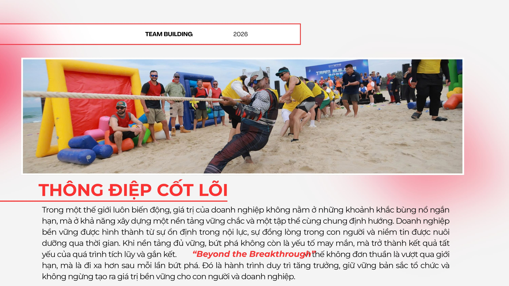
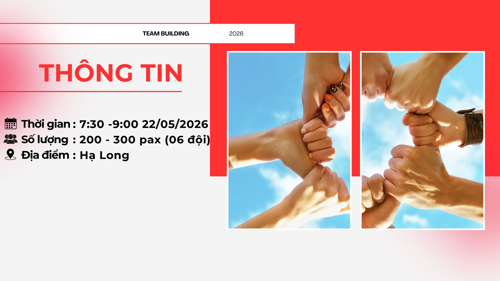
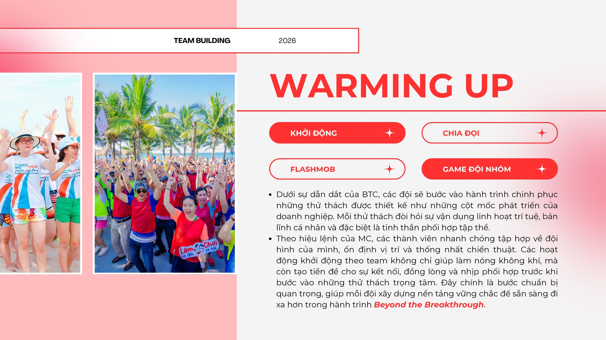
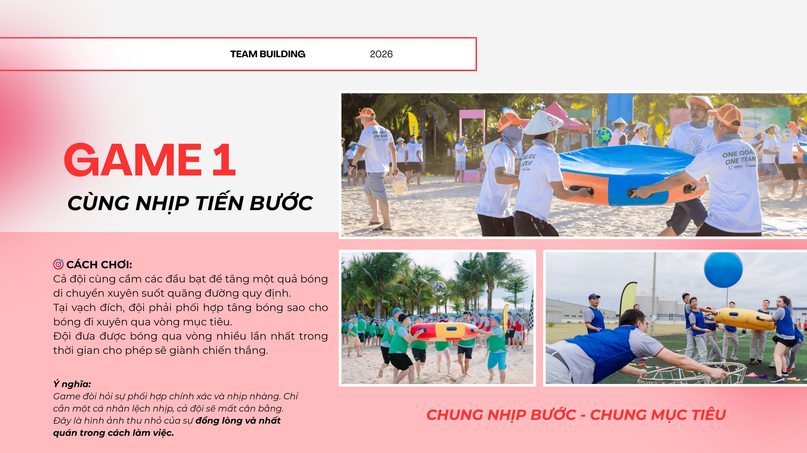
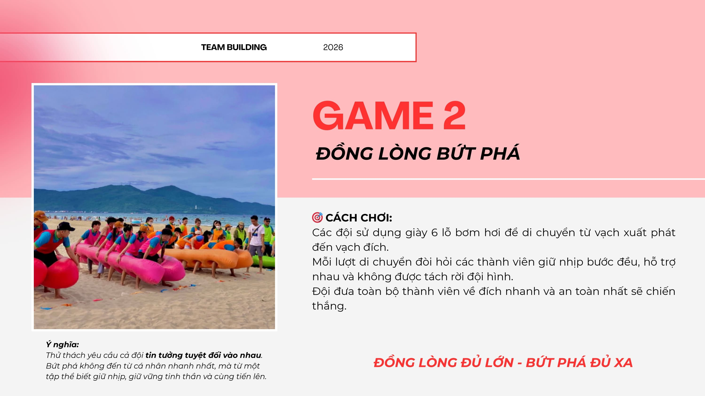
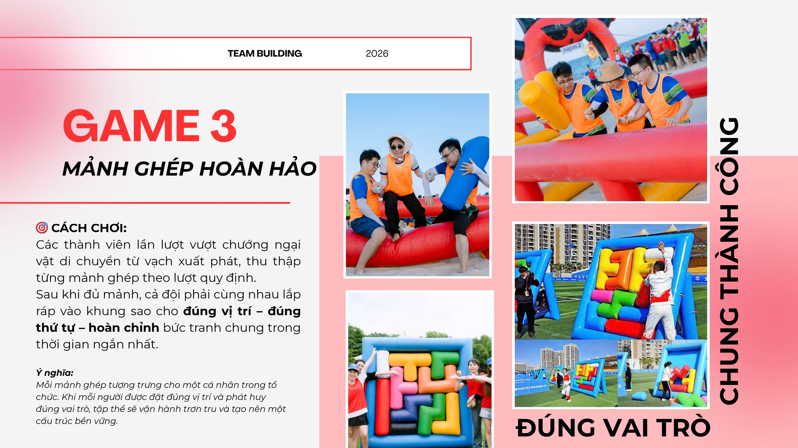
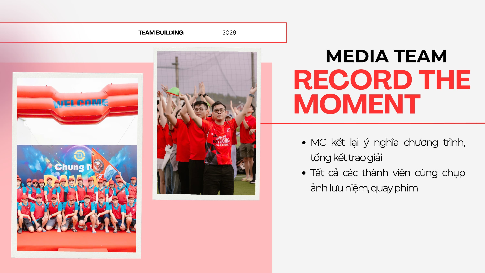
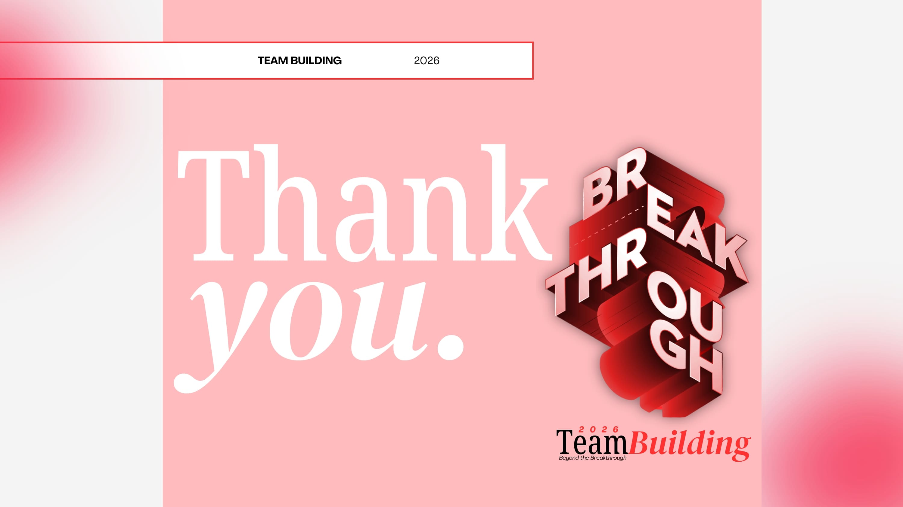
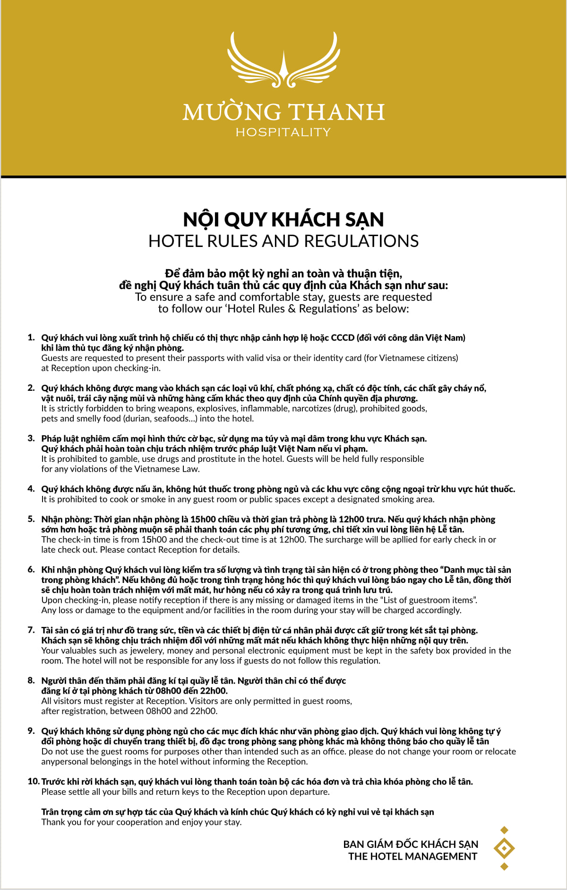
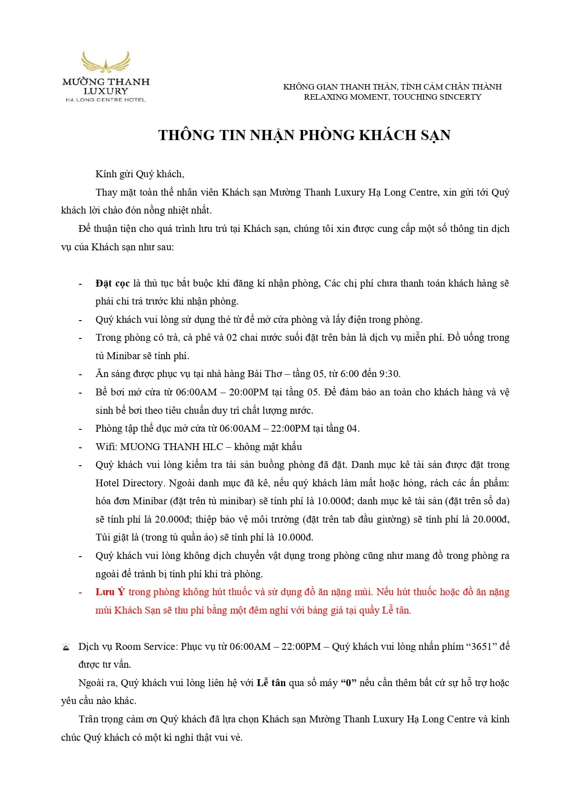

AASC du hí · Chuyến phiêu lưu trọn vẹn
Hành trình 3 ngày – Hạ Long
Ngày 1 · 21/05/2026 – Khởi hành & Gala Dinner
- 09:15 – 9 xe + 9 HDV đón tại số 1 Lê Phụng Hiểu, Hoàn Kiếm – di chuyển đến Hạ Long
- 12:00 – Ăn trưa tại khách sạn Mường Thanh Centre 1
- Chiều – Tự do trải nghiệm dịch vụ tại khách sạn
- 18:00 – Xe đưa đoàn sang Hòn Gai – Gala dinner tại KS Grand View: gameshow, âm thanh, karaoke, vũ đoàn, chụp ảnh check-in
- 21:30 – Xe đưa đoàn về nghỉ tại Mường Thanh Centre 1
Ngày 2 · 22/05/2026 – Team Building bãi biển
- Sáng – Ăn sáng buffet tại khách sạn
- 07:00 – Xe đưa đoàn ra bãi biển Sun – Team building, chụp ảnh, quay flycam. Sau đó về lại khách sạn
- 12:00 – Ăn trưa tại khách sạn Mường Thanh Centre 1
- 18:30 – Ăn tối tại khách sạn Mường Thanh Centre 1
- Tối – Nghỉ đêm tại Mường Thanh Centre 1
Ngày 3 · 23/05/2026 – Tự do & Trở về Hà Nội
- Sáng – Ăn sáng buffet tại khách sạn
- Sáng – Tự do trải nghiệm dịch vụ khách sạn, hoặc đi chợ hải sản Hạ Long & cà phê thông Zéo – điểm check-in nổi tiếng
- 11:00 – Trả phòng. Xe đưa đoàn đi ăn trưa tại nhà hàng Diamond Palace
- 13:00 – Di chuyển về Hà Nội – trên đường ghé điểm nghỉ mua quà cho người thân
- 15:45 – Về đến Hà Nội. Trả khách tại số 1 Lê Phụng Hiểu. Kết thúc hành trình
Lịch trình có thể linh động theo tình hình thực tế, nhưng đảm bảo trải nghiệm trọn vẹn.
Danh sách nhân sự & phòng khách sạn
| Họ và tên | ROOM HOTEL | Giới tính | Đơn vị | Hạng phòng | SỐ XE |
|---|---|---|---|---|---|
| Họ và tên | ROOM HOTEL | Giới tính | Đơn vị | Hạng phòng | SỐ XE |
| Ngô Đức Đoàn | 1 | Nam | Ban Tổng Giám đốc | SGL | 1 |
| Nguyễn Thanh Tùng | 2 | Nam | Ban Tổng Giám đốc | SGL | 1 |
| Đỗ Mạnh Cường | 3 | Nam | Ban Tổng Giám đốc | SGL | 1 |
| Vũ Xuân Biển | 4 | Nam | Ban Tổng Giám đốc | SGL | 1 |
| Phạm Xuân Thái | 5 | Nam | Ban Tổng Giám đốc | TW | 1 |
| Phạm Anh Tuấn | 5 | Nam | Ban Tổng Giám đốc | TW | 1 |
| Nguyễn Lan Anh | 6 | Nữ | Ban Thư ký | TW | 1 |
| Đỗ Thị Ngọc Dung | 7 | Nữ | Ban Tổng Giám đốc | TW | 8 |
| Nguyễn Thị Thanh Tú | 7 | Nữ | Tổng Hợp | TW | 8 |
| Lê Thị Tài | 8 | Nữ | Ban Thư ký | TW | 1 |
| Trần Thị Thanh Huyền | 8 | Nữ | Ban Thư ký | TW | 1 |
| Nguyễn Thị Bích Ngọc | 9 | Nữ | Kiểm toán 3 | TW | 9 |
| Lê Quỳnh Anh | 9 | Nữ | Công nghệ thông tin | TW | 5 |
| Ngô Quang Duy | 10 | Nam | Ban Thư ký | TW | 1 |
| Nguyễn Hoàng Long | 10 | Nam | Kiểm toán 2 | TW | 4 |
| Nguyễn Hoàng Phan Long | 11 | Nam | Công nghệ thông tin | TW | 5 |
| Nguyễn Hữu Nhật Anh | 11 | Nam | Công nghệ thông tin | TW | 5 |
| Lê Trung Hiếu | 12 | Nam | Công nghệ thông tin | TW | 5 |
| Phạm Đắc Hiếu | 12 | Nam | Công nghệ thông tin | TW | 5 |
| Nguyễn Hoàng Trinh | 13 | Nữ | Dự án | TRIPLE | 1 |
| Lê Lan Hương | 13 | Nữ | Dự án | TRIPLE | 1 |
| Nguyễn Thị Thủy | 13 | Nữ | Dự án | TRIPLE | 1 |
| Triệu Khánh Tùng | 14 | Nam | Dự án | TRIPLE | 1 |
| Phạm Thanh Phong | 14 | Nam | Dự án | TRIPLE | 1 |
| Lưu Việt Hoàng | 14 | Nam | Dự án | TRIPLE | 1 |
| Đặng Ngọc Tú | 15 | Nam | Dự án | TW | 1 |
| Nguyễn Khánh Duy | 15 | Nam | Dự án | TW | 1 |
| Nguyễn Thị Nga | 16 | Nữ | Dự án | TW | 1 |
| Nguyễn Thị Thúy Ngần | 16 | Nữ | Dự án | TW | 1 |
| Nguyễn Thị Thu An | 17 | Nữ | Dự án | TW | 1 |
| Nguyễn Thị Huyền Trang | 17 | Nữ | Dự án | TW | 1 |
| Trần Việt Anh | 18 | Nam | Dự án | TW | 1 |
| Nguyễn Thanh Hưng | 18 | Nam | Dự án | TW | 1 |
| Ngô Đình Chung | 19 | Nam | Dự án | TW | 1 |
| Đoàn Thanh Sơn | 19 | Nam | Dự án | TW | 1 |
| Nguyễn Kim Đức | 20 | Nam | Dự án | TW | 1 |
| Nguyễn Đức Hoàng Hà | 20 | Nam | Dự án | TW | 1 |
| Trần Văn Thịnh | 21 | Nam | Dự án | TW | 1 |
| Lâm Phúc Đạt | 21 | Nam | Dự án | TW | 1 |
| Nguyễn Đình Đức | 22 | Nam | Dự án | TW | 1 |
| Phạm Văn Hiệp | 22 | Nam | Dự án | TW | 1 |
| Lê Mạnh Hoàng | 23 | Nam | Dự án | TW | 1 |
| Nguyễn Hữu Bình | 23 | Nam | Dự án | TW | 1 |
| Đinh Quang Trung | 24 | Nam | FIS1 | TW | 2 |
| Trần Minh Đức 89 | 24 | Nam | FIS1 | TW | 2 |
| Phạm Minh Đức | 25 | Nam | FIS1 | TW | 2 |
| Phạm Hồng Quang | 25 | Nam | FIS1 | TW | 2 |
| Hoàng Minh Quang | 26 | Nam | FIS1 | TW | 2 |
| Trần Anh Minh | 26 | Nam | FIS1 | TW | 2 |
| Trần Kim Anh | 27 | Nữ | FIS1 | TW | 2 |
| Hoàng Nguyễn Tâm Anh | 27 | Nữ | FIS1 | TW | 2 |
| Trần Thị Tuyến | 28 | Nữ | FIS1 | TW | 2 |
| Nguyễn Thị Phương Nga | 28 | Nữ | FIS1 | TW | 2 |
| Trần Thị Anh Xuân | 29 | Nữ | FIS1 | TW | 2 |
| Nguyễn Ngọc Diệp | 29 | Nữ | FIS1 | TW | 2 |
| Hoàng Thị Hà Nhung | 30 | Nữ | FIS1 | TW | 2 |
| Phạm Quỳnh Nga | 30 | Nữ | FIS1 | TW | 2 |
| Vũ Thanh Ngân | 31 | Nữ | FIS1 | TW | 2 |
| Đào Minh Anh | 31 | Nữ | FIS1 | TW | 2 |
| Nguyễn Thị Vân Anh | 32 | Nữ | FIS1 | TW | 2 |
| Hoàng Thị Khánh Huyền | 32 | Nữ | FIS1 | TW | 2 |
| Nguyễn Phương Thảo | 33 | Nữ | FIS1 | TW | 2 |
| Hà Phương Anh | 33 | Nữ | FIS1 | TW | 2 |
| Nguyễn Thanh Bách | 34 | Nam | FIS1 | TW | 2 |
| Hoàng Ngọc Trung | 34 | Nam | FIS1 | TW | 2 |
| Vũ Thị Ngọc Anh | 35 | Nữ | FIS1 | TW | 2 |
| Nguyễn Thùy Trang | 35 | Nữ | FIS1 | TW | 2 |
| Nguyễn Thị Minh Ngọc | 36 | Nữ | FIS1 | TW | 2 |
| Nguyễn Thị Quyên | 36 | Nữ | FIS1 | TW | 2 |
| Phạm Thị Hải Yến | 37 | Nữ | FIS1 | TW | 2 |
| Hoàng Hải Yến | 37 | Nữ | FIS1 | TW | 2 |
| Nguyễn Phạm Hùng | 38 | Nam | FIS2 | TW | 2 |
| Trần Quang Thắng | 38 | Nam | FIS2 | TW | 2 |
| Nguyễn Thị Hoàng Lan | 39 | Nữ | FIS2 | TW | 2 |
| Ngô Ngọc Thủy Tiên | 39 | Nữ | FIS2 | TW | 2 |
| Phạm Đức Anh | 40 | Nam | FIS2 | TW | 2 |
| Hoàng Tuấn Sơn | 40 | Nam | FIS2 | TW | 2 |
| Nguyễn Tiến Sự | 41 | Nam | FIS2 | TW | 2 |
| Nguyễn Hữu Hoàng | 41 | Nam | FIS2 | TW | 2 |
| Vũ Xuân Trường | 42 | Nam | FIS2 | TW | 2 |
| Nghiêm Quang Trung | 42 | Nam | FIS2 | TW | 2 |
| Trần Hoàng Long | 43 | Nam | FIS2 | TW | 2 |
| Đặng Huy Hoàng | 43 | Nam | FIS2 | TW | 2 |
| Tô Phương Anh | 44 | Nữ | FIS2 | DBL | 6 |
| Đào Phương Hoa | 44 | Nữ | FIS2 | DBL | 6 |
| Dương Huyền Trang | 45 | Nữ | FIS2 | DBL | 6 |
| Doãn Huyền Trang | 45 | Nữ | FIS2 | DBL | 6 |
| Hoàng Hải Ngọc | 46 | Nữ | FIS2 | DBL | 6 |
| Nguyễn Anh Thư | 46 | Nữ | FIS2 | DBL | 6 |
| Nguyễn Thị Quỳnh Anh | 47 | Nữ | FIS2 | DBL | 6 |
| Dương Thị Minh Ánh | 47 | Nữ | FIS2 | DBL | 6 |
| Nguyễn Thị Ngọc Huyền | 48 | Nữ | FIS2 | DBL | 6 |
| Nguyễn Thị Hương Quỳnh | 48 | Nữ | FIS2 | DBL | 6 |
| Vũ Thị Huyền Trang | 49 | Nữ | FIS2 | DBL | 6 |
| Nguyễn Thị Thu Hương | 49 | Nữ | FIS2 | DBL | 6 |
| Nguyễn Thị Huê | 50 | Nữ | FIS2 | DBL | 6 |
| Nguyễn Thị Ngọc Diệp | 50 | Nữ | FIS2 | DBL | 6 |
| Đỗ Thị Hồng Mến | 51 | Nữ | KSCL | TW | 8 |
| Trần Thị Cẩm Vân | 51 | Nữ | KSCL | TW | 8 |
| Trần Thu Loan | 52 | Nữ | KSCL | TW | 8 |
| Đoàn Thị Xoa | 52 | Nữ | KSCL | TW | 8 |
| Nguyễn Diệu Trang | 53 | Nữ | Kiểm toán 1 | TW | 3 |
| Nguyễn Thị Thanh Hà | 53 | Nữ | Kiểm toán 1 | TW | 3 |
| Nguyễn Thị Lan | 54 | Nữ | Kiểm toán 1 | TW | 3 |
| Nguyễn Minh Trang | 54 | Nữ | Kiểm toán 1 | TW | 3 |
| Nguyễn Hồng Nhung | 55 | Nữ | Kiểm toán 1 | TW | 3 |
| Nguyễn Phương Anh | 55 | Nữ | Kiểm toán 1 | TW | 3 |
| Nguyễn Thu Hà | 56 | Nữ | Kiểm toán 1 | TW | 3 |
| Hoàng Thị Lam | 56 | Nữ | Kiểm toán 1 | TW | 3 |
| Ngô Thị Nhật Minh | 57 | Nữ | Kiểm toán 1 | TW | 3 |
| Vũ Thị Mây | 57 | Nữ | Kiểm toán 1 | TW | 3 |
| Phạm Thị Thúy | 58 | Nữ | Kiểm toán 1 | TW | 3 |
| Trần Thị Tuyết Lan | 58 | Nữ | Kiểm toán 1 | TW | 3 |
| Phí Thị Hạnh | 59 | Nữ | Kiểm toán 1 | TW | 3 |
| Hồ Thị Duyên | 59 | Nữ | Kiểm toán 1 | TW | 3 |
| Trần Thảo Nhung | 60 | Nữ | Kiểm toán 1 | TW | 3 |
| Đỗ Phương Anh | 60 | Nữ | Kiểm toán 1 | TW | 3 |
| Nguyễn Thị Vân Anh | 61 | Nữ | Kiểm toán 1 | TW | 3 |
| Nguyễn Thị Y Bình | 61 | Nữ | Kiểm toán 1 | TW | 3 |
| Đoàn Mỹ Hằng | 62 | Nữ | Kiểm toán 1 | TW | 3 |
| Bùi Thị Huệ | 62 | Nữ | Kiểm toán 1 | TW | 3 |
| Lê Khánh Huyền | 63 | Nữ | Kiểm toán 1 | TW | 3 |
| Vũ Thị Thu Thủy | 63 | Nữ | Kiểm toán 1 | TW | 3 |
| Nguyễn Thị Duyên | 64 | Nữ | Kiểm toán 1 | TW | 3 |
| Đàm Thị Thanh Xuân | 64 | Nữ | Kiểm toán 1 | TW | 3 |
| Ngô Thị Minh Ngọc | 65 | Nữ | Kiểm toán 1 | TW | 3 |
| Trần Thị Khánh Hòa | 65 | Nữ | Kiểm toán 1 | TW | 3 |
| Hà Văn Xuyên | 66 | Nam | Kiểm toán 1 | TW | 3 |
| Nguyễn Tiến Trung | 66 | Nam | Kiểm toán 1 | TW | 3 |
| Nguyễn Thìn Lưu | 67 | Nam | Kiểm toán 1 | TW | 3 |
| Nguyễn Mạnh Hùng | 67 | Nam | Kiểm toán 1 | TW | 3 |
| Nguyễn Công Thương | 68 | Nam | Kiểm toán 1 | TW | 3 |
| Nguyễn Đức Tiến | 68 | Nam | Kiểm toán 1 | TW | 3 |
| Nguyễn Thành Công | 69 | Nam | Kiểm toán 1 | TW | 3 |
| Hoàng Anh Quân | 69 | Nam | Kiểm toán 1 | TW | 3 |
| Trần Minh Đức | 70 | Nam | Kiểm toán 1 | TW | 3 |
| Nguyễn Quốc Dũng | 70 | Nam | Kiểm toán 1 | TW | 3 |
| Nguyễn Hải Quân | 71 | Nam | Kiểm toán 1 | TW | 3 |
| Đào Mạnh Hiếu | 71 | Nam | Kiểm toán 1 | TW | 3 |
| Nguyễn Tuấn Anh | 72 | Nam | Kiểm toán 2 | TW | 4 |
| Ngô Hoàng Hà | 72 | Nam | Kiểm toán 2 | TW | 4 |
| Trần Quang Mầu | 73 | Nam | Kiểm toán 2 | TW | 4 |
| Dương Quân Anh | 73 | Nam | Kiểm toán 2 | TW | 4 |
| Đặng Huy Hoàng | 74 | Nam | Kiểm toán 2 | TW | 4 |
| Nguyễn Tuấn Anh (91) | 74 | Nam | Kiểm toán 2 | TW | 4 |
| Đỗ Hoàng Hải | 75 | Nam | Kiểm toán 2 | TW | 4 |
| Nguyễn Trí Thành | 75 | Nam | Kiểm toán 2 | TW | 4 |
| Nguyễn Trung Kiên | 76 | Nam | Kiểm toán 2 | TW | 4 |
| Vũ Minh Ngọc | 76 | Nam | Kiểm toán 2 | TW | 4 |
| Vũ Thùy Trang | 77 | Nữ | Kiểm toán 2 | TW | 4 |
| Nguyễn Ngọc Yến | 77 | Nữ | Kiểm toán 2 | TW | 4 |
| Trần Đức Nghĩa | 78 | Nam | Kiểm toán 2 | TW | 4 |
| Đào Văn Nam | 78 | Nam | Kiểm toán 2 | TW | 4 |
| Hoàng Mạnh Cường | 79 | Nam | Kiểm toán 2 | TW | 4 |
| Lê Đăng Quang | 79 | Nam | Kiểm toán 2 | TW | 4 |
| Đặng Lê Thu Hiền | 80 | Nữ | Kiểm toán 2 | TW | 4 |
| Nguyễn Thị Út | 80 | Nữ | Kiểm toán 2 | TW | 4 |
| Phạm Doãn Hướng | 81 | Nam | Kiểm toán 2 | TW | 4 |
| Nguyễn Quang Huy | 81 | Nam | Kiểm toán 2 | TW | 4 |
| Phạm Thị Linh Chi | 82 | Nữ | Kiểm toán 2 | TW | 4 |
| Phạm Nguyễn Diệu Anh | 82 | Nữ | Kiểm toán 2 | TW | 4 |
| Nguyễn Thị Kim Dung | 83 | Nữ | Kiểm toán 2 | TW | 4 |
| Nguyễn Thị Thu Trang | 83 | Nữ | Kiểm toán 2 | TW | 4 |
| Trần Thị Thu Hằng | 84 | Nữ | Kiểm toán 2 | TW | 4 |
| Vũ Thu Trang | 84 | Nữ | Kiểm toán 2 | TW | 4 |
| Đỗ Thị Oanh | 85 | Nữ | Kiểm toán 2 | TW | 4 |
| Nguyễn Thị Hòa | 85 | Nữ | Kiểm toán 2 | TW | 4 |
| Đào Đăng Khánh | 86 | Nam | Kiểm toán 2 | TW | 4 |
| Nguyễn Duy Khánh 2003 | 86 | Nam | Kiểm toán 2 | TW | 4 |
| Cao Vũ Tuyết Anh | 87 | Nữ | Kiểm toán 2 | TW | 4 |
| Bùi Mai Trang | 87 | Nữ | Kiểm toán 2 | TW | 4 |
| Đào Đức Hiệp | 88 | Nam | Kiểm toán 2 | TW | 4 |
| Đặng Minh Tùng | 88 | Nam | Kiểm toán 2 | TW | 4 |
| Nguyễn Ngọc Phương Yến | 89 | Nữ | Kiểm toán 2 | TW | 4 |
| Lý Hương Ly | 89 | Nữ | Kiểm toán 2 | TW | 4 |
| Hoàng Thị Thu Hương | 90 | Nữ | Kiểm toán 3 | TW | 9 |
| Hoàng Thị Tâm | 90 | Nữ | Kiểm toán 3 | TW | 9 |
| Phạm Thị Xuân Thu | 91 | Nữ | Kiểm toán 3 | TW | 9 |
| Nguyễn Thị Nhàn | 91 | Nữ | Kiểm toán 3 | TW | 9 |
| Bùi Thị Thủy | 92 | Nữ | Kiểm toán 3 | TW | 9 |
| Trần Thị Nga | 92 | Nữ | Kiểm toán 3 | TW | 9 |
| Bùi Thùy Ninh | 93 | Nữ | Kiểm toán 3 | TW | 9 |
| Trần Thị Hương Ly | 93 | Nữ | Kiểm toán 3 | TW | 9 |
| Trần Hà Vy | 94 | Nữ | Kiểm toán 3 | TW | 9 |
| Nguyễn Hiếu Hạnh | 94 | Nữ | Kiểm toán 3 | TW | 9 |
| Nguyễn Thị Thanh Chúc | 95 | Nữ | Kiểm toán 3 | TW | 9 |
| Nguyễn Thị Thúy Hằng | 95 | Nữ | Kiểm toán 3 | TW | 9 |
| Lê Văn Hưng | 96 | Nam | Kiểm toán 3 | TW | 9 |
| Hà Quang Hưng | 96 | Nam | Kiểm toán 3 | TW | 9 |
| Nguyễn Hữu Trường | 97 | Nam | Kiểm toán 3 | TW | 9 |
| Trần Duy Anh | 97 | Nam | Kiểm toán 3 | TW | 9 |
| Nguyễn Trọng Đức | 98 | Nam | Kiểm toán 3 | TW | 9 |
| Hà Huy Hiệu | 98 | Nam | Kiểm toán 3 | TW | 9 |
| Hoàng Anh Tuấn | 99 | Nam | Kiểm toán 3 | TW | 9 |
| Nguyễn Văn Long | 99 | Nam | Kiểm toán 3 | TW | 9 |
| Hoàng Thúy Nga | 100 | Nữ | Kiểm toán 5 | TW | 5 |
| Phan Anh Thi | 100 | Nữ | Kiểm toán 5 | TW | 5 |
| Nguyễn Trường Minh | 101 | Nam | Kiểm toán 5 | TW | 5 |
| Nguyễn Duy Quảng | 101 | Nam | Kiểm toán 5 | TW | 5 |
| Tạ Minh Châu | 102 | Nam | Kiểm toán 5 | TW | 5 |
| Trần Thanh Tùng | 102 | Nam | Kiểm toán 5 | TW | 5 |
| Nguyễn Minh Hoàng | 103 | Nam | Kiểm toán 5 | TW | 5 |
| Lê Long Hải | 103 | Nam | Kiểm toán 5 | TW | 5 |
| Hoàng Đức Ân | 104 | Nam | Kiểm toán 5 | TW | 5 |
| Chu Nam Anh | 104 | Nam | Kiểm toán 5 | TW | 5 |
| Bùi Phương Mai | 105 | Nữ | Kiểm toán 5 | DBL | 5 |
| Nguyễn Mạnh Tiến | 105 | Nam | Kiểm toán 5 | DBL | 5 |
| Nguyễn Tấn Long | 106 | Nam | Kiểm toán 5 | TW | 5 |
| Trần Huy Nhật Minh | 106 | Nam | Kiểm toán 5 | TW | 5 |
| Khuất Hải Yến | 107 | Nữ | Kiểm toán 5 | TW | 5 |
| Trần Hà Khánh Ly | 107 | Nữ | Kiểm toán 5 | TW | 5 |
| Nguyễn Hà Phương Anh | 108 | Nữ | Kiểm toán 5 | TW | 5 |
| Nguyễn Hà Trang | 108 | Nữ | Kiểm toán 5 | TW | 5 |
| Trần Minh Tiến 2002 | 109 | Nam | Kiểm toán 5 | TW | 5 |
| Lê Đức Anh | 109 | Nam | Kiểm toán 5 | TW | 5 |
| Nguyễn Vũ Quỳnh Chi | 110 | Nữ | Kiểm toán 5 | TW | 5 |
| Nguyễn Hải Yến | 110 | Nữ | Kiểm toán 5 | TW | 5 |
| Đỗ Thị Nhung | 111 | Nữ | Kiểm toán 5 | TW | 5 |
| Nguyễn Thị Thu Hằng | 111 | Nữ | Kiểm toán 5 | TW | 5 |
| Trần Ngọc Khánh | 112 | Nam | Kiểm toán 5 | TW | 5 |
| Quách Thành Chương | 112 | Nam | Kiểm toán 5 | TW | 5 |
| Lê Vương Nhất Linh | 113 | Nam | Kiểm toán 5 | TW | 5 |
| Lô Xuân Cường | 113 | Nam | Kiểm toán 5 | TW | 5 |
| Nguyễn Thị Dung | 114 | Nữ | Kiểm toán 5 | TW | 5 |
| Cao Xuân Thương | 114 | Nữ | Kiểm toán 5 | TW | 5 |
| Lý Thị Minh Nguyệt | 115 | Nữ | Kiểm toán 5 | TW | 5 |
| Hoàng Thùy Dương | 115 | Nữ | Kiểm toán 5 | TW | 5 |
| Đặng Quỳnh Chi | 116 | Nữ | Kiểm toán 5 | TW | 5 |
| Hoàng Thanh Thảo | 116 | Nữ | Kiểm toán 5 | TW | 5 |
| Lê Thị Dung | 117 | Nữ | Kiểm toán 5 | TW | 5 |
| Trần Thanh Khuê | 117 | Nữ | Kiểm toán 5 | TW | 5 |
| Nguyễn Anh Ngọc | 118 | Nam | Kiểm toán 6 | TW | 6 |
| Trần Văn Chiến | 118 | Nam | Kiểm toán 6 | TW | 6 |
| Trần Duy Nam | 119 | Nam | Kiểm toán 6 | DBL | 6 |
| Nguyễn Văn Tùng | 119 | Nam | Kiểm toán 6 | DBL | 6 |
| Vũ Tiến Trung | 120 | Nam | Kiểm toán 6 | DBL | 6 |
| Lý Quang Huy | 120 | Nam | Kiểm toán 6 | DBL | 6 |
| Trần Minh Huy | 121 | Nam | Kiểm toán 6 | DBL | 6 |
| Nguyễn Hoàng Nam | 121 | Nam | Kiểm toán 6 | DBL | 6 |
| Lang Quốc Cường | 122 | Nam | Kiểm toán 6 | TW | 6 |
| Công Quý Long | 122 | Nam | Kiểm toán 6 | TW | 6 |
| Nguyễn Công Hiếu | 123 | Nam | Kiểm toán 3 | TW | 9 |
| Nguyễn Minh Tuân | 123 | Nam | Kiểm toán 6 | TW | 6 |
| Khuất Phương Anh | 124 | Nữ | Kiểm toán 6 | DBL | 6 |
| Bùi Thảo Phương | 124 | Nữ | Kiểm toán 6 | DBL | 6 |
| Bùi Phương Mai | 125 | Nữ | Kiểm toán 6 | TW | 6 |
| Đoàn Thị Thu Trang | 125 | Nữ | Kiểm toán 6 | TW | 6 |
| Nguyễn Thị Thúy Hường | 126 | Nữ | Kiểm toán 6 | DBL | 6 |
| Phan Thùy Linh | 126 | Nữ | Kiểm toán 6 | DBL | 6 |
| Phạm Quỳnh Giang | 127 | Nữ | Kiểm toán 6 | DBL | 6 |
| Trịnh Khánh Linh | 127 | Nữ | Kiểm toán 6 | DBL | 6 |
| Nguyễn Thị Lệ Chi | 128 | Nữ | Kiểm toán 6 | DBL | 6 |
| Trần Thị Thu Thảo | 128 | Nữ | Kiểm toán 6 | DBL | 6 |
| Nguyễn Khánh Ly | 129 | Nữ | Kiểm toán 6 | DBL | 6 |
| Hoàng Hồng Nhung | 129 | Nữ | Kiểm toán 6 | DBL | 6 |
| Trần Như Quỳnh | 130 | Nữ | Kiểm toán 6 | TW | 6 |
| Trịnh Thu Thúy | 130 | Nữ | Kiểm toán 6 | TW | 6 |
| Nguyễn Ngọc Lân | 131 | Nam | Kiểm toán 7 | TW | 7 |
| Nguyễn Đức Trọng | 131 | Nam | Kiểm toán 7 | TW | 7 |
| Cấn Việt Hùng | 132 | Nam | Kiểm toán 7 | TW | 7 |
| Nguyễn Tuấn Minh | 132 | Nam | Kiểm toán 7 | TW | 7 |
| Phạm Hương Giang | 133 | Nữ | Kiểm toán 7 | TW | 7 |
| Trần Thu Hằng | 133 | Nữ | Kiểm toán 7 | TW | 7 |
| Vũ Minh Tiến | 134 | Nam | Kiểm toán 7 | TW | 7 |
| Phạm Hùng | 134 | Nam | Kiểm toán 7 | TW | 7 |
| Lê Thị Lan Phương | 135 | Nữ | Kiểm toán 7 | TW | 7 |
| Dương Thị Thảo Trang | 135 | Nữ | Kiểm toán 7 | TW | 7 |
| Nguyễn Thị Quỳnh Trâm | 136 | Nữ | Kiểm toán 7 | TW | 7 |
| Đỗ Quỳnh Mai | 136 | Nữ | Kiểm toán 7 | TW | 7 |
| Phương Hồng Vân | 137 | Nữ | Kiểm toán 7 | TW | 7 |
| Nguyễn Hoài Thu | 137 | Nữ | Kiểm toán 7 | TW | 7 |
| Nguyễn Văn Tiến Đạt | 138 | Nam | Kiểm toán 7 | TW | 7 |
| Nguyễn Cao Thắng | 138 | Nam | Kiểm toán 7 | TW | 7 |
| Lê Minh Hà | 139 | Nam | Kiểm toán 7 | TW | 7 |
| Hoàng Quốc Khánh | 139 | Nam | Kiểm toán 7 | TW | 7 |
| Nông Thị Thanh Lạng | 140 | Nữ | Kiểm toán 7 | TW | 7 |
| Nguyễn Minh Ngọc | 140 | Nữ | Kiểm toán 7 | TW | 7 |
| Đàm Bảo Khanh | 141 | Nữ | Kiểm toán 7 | TW | 7 |
| Trương Thị Hải Vân | 141 | Nữ | Kiểm toán 7 | TW | 7 |
| Đỗ Thị Tuyết Nhung | 142 | Nữ | Kiểm toán 7 | TW | 7 |
| Nguyễn Thị Phương Dung | 142 | Nữ | Kiểm toán 7 | TW | 7 |
| Nguyễn Thị Lý | 143 | Nữ | Kiểm toán 7 | TW | 7 |
| Trần Thị Dịu | 143 | Nữ | Kiểm toán 7 | TW | 7 |
| Vũ Thùy Dương | 144 | Nữ | Kiểm toán 7 | TW | 7 |
| Quách Ngọc Ánh | 144 | Nữ | Kiểm toán 7 | TW | 7 |
| Dương Quý Khánh | 145 | Nam | Kiểm toán 7 | TW | 7 |
| Phạm Văn Tùng | 145 | Nam | Kiểm toán 7 | TW | 7 |
| Nguyễn Duy Khánh | 146 | Nam | Kiểm toán 7 | TW | 7 |
| Tô Thành Nam | 146 | Nam | Kiểm toán 7 | TW | 7 |
| Nguyễn Ngọc Quỳnh Anh | 147 | Nữ | Kiểm toán 7 | TW | 7 |
| Nguyễn Thị Thủy 2003 | 147 | Nữ | Kiểm toán 7 | TW | 7 |
| Nguyễn Đức Hiếu | 148 | Nam | Kiểm toán 7 | TW | 7 |
| Trần Minh Hiếu | 148 | Nam | Kiểm toán 7 | TW | 7 |
| Phạm Ngọc Sơn | 149 | Nam | Kiểm toán 7 | TW | 7 |
| Lê Minh Sơn | 149 | Nam | Kiểm toán 7 | TW | 7 |
| Vũ Xuân Tùng | 150 | Nam | Kiểm toán 8 | TW | 8 |
| Nguyễn Việt Hà | 150 | Nữ | Tổng Hợp | TW | 8 |
| Nguyễn Hoài Nam | 151 | Nam | Kiểm toán 8 | TW | 8 |
| Chu Mạnh Đức | 151 | Nam | Kiểm toán 8 | TW | 8 |
| Nguyễn Minh Đức | 152 | Nam | Kiểm toán 8 | TW | 8 |
| Phạm Lân Khánh | 152 | Nam | Kiểm toán 8 | TW | 8 |
| Vũ Thu Hiền | 153 | Nữ | Kiểm toán 8 | TW | 8 |
| Nguyễn Thu Hương | 153 | Nữ | Kiểm toán 8 | TW | 8 |
| Phạm Ngọc Mai | 154 | Nữ | Kiểm toán 8 | TW | 8 |
| Nguyễn Minh Thu | 154 | Nữ | Kiểm toán 8 | TW | 8 |
| Hoàng Yến Linh | 155 | Nữ | Kiểm toán 8 | TW | 8 |
| Nguyễn Thanh Nga | 155 | Nữ | Kiểm toán 8 | TW | 8 |
| Vũ Thị Mai Phương | 156 | Nữ | Kiểm toán 8 | TW | 8 |
| Đỗ Thị Thúy Ngà | 156 | Nữ | Tổng Hợp | TW | 8 |
| Vũ Quý Cường | 157 | Nam | Quyết toán Đầu tư | TW | 9 |
| Nguyễn Ngọc Dương | 157 | Nam | Quyết toán Đầu tư | TW | 9 |
| Ngô Anh Minh | 158 | Nam | Quyết toán Đầu tư | TW | 9 |
| Nguyễn Tân | 158 | Nam | Quyết toán Đầu tư | TW | 9 |
| Vũ Duy Toàn | 159 | Nam | Quyết toán Đầu tư | TW | 9 |
| Lưu Thanh Nghị | 159 | Nam | Quyết toán Đầu tư | TW | 9 |
| Trần Thế Anh | 160 | Nam | Quyết toán Đầu tư | TW | 9 |
| Vũ Khánh Tùng | 160 | Nam | Quyết toán Đầu tư | TW | 9 |
| Bùi Thanh An | 161 | Nam | Quyết toán Đầu tư | TW | 9 |
| Nguyễn Bá Mạnh | 161 | Nam | Quyết toán Đầu tư | TW | 9 |
| Nguyễn Thị Tuyết Mai | 162 | Nữ | Quyết toán Đầu tư | TW | 9 |
| Nguyễn Thị Mai Hương | 162 | Nữ | Quyết toán Đầu tư | TW | 9 |
| Nguyễn Duy Hà | 163 | Nam | Quyết toán Đầu tư | TW | 9 |
| Trần Nguyễn Hoàng | 163 | Nam | Quyết toán Đầu tư | TW | 9 |
| Nguyễn Quang Huy | 164 | Nam | Thẩm định giá | TW | 8 |
| Hoàng Minh Đức | 164 | Nam | Thẩm định giá | TW | 8 |
| Nguyễn Đức Sơn | 165 | Nam | Thẩm định giá | TW | 8 |
| Nguyễn Văn Toàn | 165 | Nam | Thẩm định giá | TW | 8 |
| Ngô Đào Hùng | 166 | Nam | Tổng Hợp | TW | 8 |
| Nguyễn Văn Tâm | 166 | Nam | Tổng Hợp | TW | 8 |
| Nguyễn Thị Hương | 167 | Nữ | Tổng Hợp | TW | 8 |
| Nguyễn Thị Thu Hà | 167 | Nữ | Tổng Hợp | TW | 8 |
| Hoàng Văn Huân | 168 | Nam | Tổng Hợp | TW | 8 |
| Hứa Trường Giang | 168 | Nam | Tổng Hợp | TW | 8 |
| Dương Văn Thái | 169 | Nam | Tổng Hợp | TW | 8 |
| Nguyễn Hữu Thịnh | 169 | Nam | Tổng Hợp | TW | 8 |
| Phùng Thành Trung | 170 | Nam | Tổng Hợp | TW | 8 |
| Ngô Văn Chiện | 170 | Nam | Tổng Hợp | TW | 8 |
| Nguyễn Thị Ngọc Phương | 171 | Nữ | Tổng Hợp | TW | 8 |
| Nguyễn Thị Minh Hạnh | 171 | Nữ | Tổng Hợp | TW | 8 |
| Trần Thị Anh Đào | 172 | Nữ | Tổng Hợp | TW | 8 |
| Ngô Thị Phương Thảo | 172 | Nữ | Tổng Hợp | TW | 8 |
| Bùi Văn Thảo | 173 | Nam | CN Hồ Chí Minh | SGL | HCM-1 |
| Ngô Minh Quý | 174 | Nam | CN Hồ Chí Minh | SGL | HCM-1 |
| Trần Bá Thiện | 175 | Nam | CN Hồ Chí Minh | TW | HCM-1 |
| Lê Trường Long | 175 | Nam | CN Hồ Chí Minh | TW | HCM-1 |
| Mai Thanh Hoài | 176 | Nam | CN Hồ Chí Minh | TRIPLE | HCM-1 |
| Đặng Xuân Lâm | 176 | Nam | CN Hồ Chí Minh | TRIPLE | HCM-1 |
| Đinh Quang Thắng | 176 | Nam | CN Hồ Chí Minh | TRIPLE | HCM-1 |
| Nguyễn Đức Hưng | 177 | Nam | CN Hồ Chí Minh | TW | HCM-1 |
| Võ Quốc Duy | 177 | Nam | CN Hồ Chí Minh | TW | HCM-1 |
| Nguyễn Thái | 178 | Nam | CN Hồ Chí Minh | TW | HCM-1 |
| Nguyễn Đức Minh | 178 | Nam | CN Hồ Chí Minh | TW | HCM-1 |
| Võ Thái Sơn | 179 | Nam | CN Hồ Chí Minh | TW | HCM-1 |
| Võ Minh Tú | 179 | Nam | CN Hồ Chí Minh | TW | HCM-1 |
| Phạm Văn Giàu | 180 | Nam | CN Hồ Chí Minh | TW | HCM-1 |
| Hồ Vĩnh Thụy | 180 | Nam | CN Hồ Chí Minh | TW | HCM-1 |
| Đào Trung Thành | 181 | Nam | CN Hồ Chí Minh | TW | HCM-1 |
| Phạm Văn Sang | 181 | Nam | CN Hồ Chí Minh | TW | HCM-1 |
| Huỳnh Trung Hiếu | 182 | Nam | CN Hồ Chí Minh | TW | HCM-1 |
| Tống Minh Dương | 182 | Nam | CN Hồ Chí Minh | TW | HCM-1 |
| Lê Khánh Tùng | 183 | Nam | CN Hồ Chí Minh | TW | HCM-1 |
| Trần Đức Quang | 183 | Nam | CN Hồ Chí Minh | TW | HCM-1 |
| Vũ Cường | 184 | Nam | CN Hồ Chí Minh | TW | HCM-1 |
| Nguyễn Hồng Phong | 184 | Nam | CN Hồ Chí Minh | TW | HCM-1 |
| Nguyễn Thị Yến | 185 | Nữ | CN Hồ Chí Minh | TW | HCM-1 |
| Đào Phương Dung | 185 | Nữ | CN Hồ Chí Minh | TW | HCM-1 |
| Vương Minh Hoàng | 186 | Nam | CN Hồ Chí Minh | TW | HCM-1 |
| Đào Quang Dũng | 186 | Nam | CN Hồ Chí Minh | TW | HCM-1 |
| Đoàn Đức Trí | 187 | Nam | CN Hồ Chí Minh | TW | HCM-1 |
| Hồ Ngọc Thịnh | 187 | Nam | CN Hồ Chí Minh | TW | HCM-1 |
| Đỗ Thị Cẩm Nhiên | 188 | Nữ | CN Hồ Chí Minh | TW | HCM-1 |
| Nguyễn Thị Mỹ Lộc | 188 | Nữ | CN Hồ Chí Minh | TW | HCM-1 |
| Nguyễn Thị Phương Thảo | 189 | Nữ | CN Hồ Chí Minh | TW | HCM-1 |
| Nguyễn Thị Kim Hồng | 189 | Nữ | CN Hồ Chí Minh | TW | HCM-1 |
| Nguyễn Thị Hoài Thương | 190 | Nữ | CN Hồ Chí Minh | TW | HCM-1 |
| Lê Xuân Đào | 190 | Nữ | CN Hồ Chí Minh | TW | HCM-1 |
| Phạm Thị Huỳnh Như | 191 | Nữ | CN Hồ Chí Minh | TW | HCM-1 |
| Phạm Thị Mỹ Quyên | 191 | Nữ | CN Hồ Chí Minh | TW | HCM-1 |
| Lê Thị Phương Thảo | 192 | Nữ | CN Hồ Chí Minh | TW | HCM-2 |
| Lê Kim Yến | 192 | Nữ | CN Hồ Chí Minh | TW | HCM-2 |
| Nguyễn Thị Thu | 193 | Nữ | CN Hồ Chí Minh | TW | HCM-2 |
| Phan Thị Linh | 193 | Nữ | CN Hồ Chí Minh | TW | HCM-2 |
| Nguyễn Thị Mỹ Trâm | 194 | Nữ | CN Hồ Chí Minh | TW | HCM-2 |
| Võ Châu Ý Nhi | 194 | Nữ | CN Hồ Chí Minh | TW | HCM-2 |
| Lý Bảo Ngọc | 195 | Nữ | CN Hồ Chí Minh | TW | HCM-2 |
| Nguyễn Bảo Nhi | 195 | Nữ | CN Hồ Chí Minh | TW | HCM-2 |
| Trương Minh Nguyên | 196 | Nam | CN Hồ Chí Minh | TW | HCM-2 |
| Nguyễn Tuấn Kiệt | 196 | Nam | CN Hồ Chí Minh | TW | HCM-2 |
| Nguyễn Thị Thanh Trúc | 197 | Nữ | CN Hồ Chí Minh | TW | HCM-2 |
| Nguyễn Thị Trúc Hà | 197 | Nữ | CN Hồ Chí Minh | TW | HCM-2 |
| Nguyễn Thị Thúy Kiều | 198 | Nữ | CN Hồ Chí Minh | DBL | HCM-2 |
| Lê Thị Hồng Hạnh | 198 | Nữ | CN Hồ Chí Minh | DBL | HCM-2 |
| Nguyễn Hoàng Uyên | 199 | Nữ | CN Hồ Chí Minh | DBL | HCM-2 |
| Lê Minh Khang | 199 | Nam | CN Hồ Chí Minh | DBL | HCM-2 |
| Vũ Anh Dũng | 200 | Nam | CN Hồ Chí Minh | DBL | HCM-2 |
| Nguyễn Quốc Bình | 200 | Nam | CN Hồ Chí Minh | DBL | HCM-2 |
| Lê Thị Ngọc Bảo Ân | 201 | Nữ | CN Hồ Chí Minh | DBL | HCM-2 |
| Lê Thị Bích Ngân | 201 | Nữ | CN Hồ Chí Minh | DBL | HCM-2 |
| Mai Thị Ngọc Hiền | 202 | Nữ | CN Hồ Chí Minh | DBL | HCM-2 |
| Bùi Thị Huế | 202 | Nữ | CN Hồ Chí Minh | DBL | HCM-2 |
| Trần Trung Hiếu | 203 | Nam | CN Hồ Chí Minh | TW | HCM-2 |
| Trần Lê Hải Lam | 203 | Nữ | CN Hồ Chí Minh | TW | HCM-2 |
| Nguyễn Thị Hải Hương | 204 | Nữ | CN Quảng Ninh | TW | QN |
| Nguyễn Kim Cúc | 204 | Nữ | CN Quảng Ninh | TW | QN |
| Hà Tiến Sỹ | 205 | Nam | CN Quảng Ninh | TW | QN |
| Văn Đăng Sử | 205 | Nam | CN Quảng Ninh | TW | QN |
| Nguyễn Đức Hường | 206 | Nam | CN Quảng Ninh | TW | QN |
| Nguyễn Văn Bằng | 206 | Nam | CN Quảng Ninh | TW | QN |
| Trần Thị Hà | 207 | Nữ | CN Quảng Ninh | TW | QN |
| Lương Thị Thu Hằng | 207 | Nữ | CN Quảng Ninh | TW | QN |
| Đào Văn Chí | 208 | Nam | CN Quảng Ninh | TW | QN |
| Lưu Đình Đức | 208 | Nam | CN Quảng Ninh | TW | QN |
| Nguyễn Thị Tuyết Dung | 209 | Nữ | CN Quảng Ninh | TW | QN |
| Nguyễn Thu Huyền 96 | 209 | Nữ | CN Quảng Ninh | TW | QN |
| Nguyễn Thị Thu Thảo | 210 | Nữ | CN Quảng Ninh | TW | QN |
| Nguyễn Thùy Linh QN | 210 | Nữ | CN Quảng Ninh | TW | QN |
| Nguyễn Văn Cường | 211 | Nam | CN Quảng Ninh | TW | QN |
| Phạm Đình Phương | 211 | Nam | CN Quảng Ninh | TW | QN |
| Nguyễn Anh Nghĩa | 212 | Nam | CN Quảng Ninh | TW | QN |
| Trần Vũ Lâm | 212 | Nam | CN Quảng Ninh | TW | QN |
| Phạm Minh Đức 95 | 213 | Nam | CN Quảng Ninh | TRIPLE | QN |
| Phạm Thanh Tùng QN | 213 | Nam | CN Quảng Ninh | TRIPLE | QN |
| Phạm Thanh Sơn | 213 | Nam | CN Quảng Ninh | TRIPLE | QN |
Team Building – Hạ Long 2026








Nội quy khách sạn


Dress Code – Hạ Long 2026
🎉 Gala Dinner · 21/05/2026
Nam
Trang phục tự chọn, trẻ trung, phù hợp dự tiệc
❌ Không mặc quần sooc, đi dép lê
❌ Không mặc quần sooc, đi dép lê
Nữ
Trang phục dự tiệc đẹp
✨ Khuyến khích trang phục dạ hội
✨ Khuyến khích trang phục dạ hội


🏖 Teambuilding trên biển · Sáng 22/05/2026
Tất cả
Áo phông đồng phục AASC
👟 Quần thể thao, giày/dép đi biển thoải mái
👟 Quần thể thao, giày/dép đi biển thoải mái